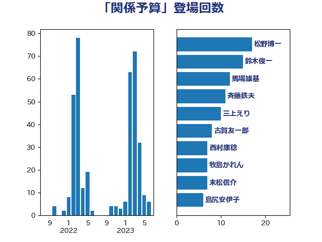

単語「関係予算」

| 松野博一 | 自由民主党 | 17 回 |
| 鈴木俊一 | 自由民主党 | 15 回 |
| 馬場雄基 | 立憲民主党 | 12 回 |
| 斉藤鉄夫 | 公明党 | 11 回 |
| 三上えり | 立憲民主党 | 10 回 |
| 古賀友一郎 | 自由民主党 | 8 回 |
| 西村康稔 | 自由民主党 | 7 回 |
| 牧島かれん | 自由民主党 | 7 回 |
| 末松信介 | 自由民主党 | 7 回 |
| 島尻安伊子 | 自由民主党 | 6 回 |
| 岸田文雄 | 自由民主党 | 6 回 |
| 萩生田光一 | 自由民主党 | 5 回 |
| 小寺裕雄 | 自由民主党 | 5 回 |
| 黄川田仁志 | 自由民主党 | 4 回 |
| 野田聖子 | 自由民主党 | 4 回 |
| 羽田次郎 | 立憲民主党 | 4 回 |
| 簗和生 | 自由民主党 | 4 回 |
| 矢倉克夫 | 公明党 | 4 回 |
| 田村貴昭 | 日本共産党 | 4 回 |
| 池田佳隆 | 自由民主党 | 4 回 |
| 永岡桂子 | 自由民主党 | 4 回 |
| 橋本岳 | 自由民主党 | 4 回 |
| 岡田直樹 | 自由民主党 | 4 回 |
| 岡本三成 | 公明党 | 4 回 |
| 和田義明 | 自由民主党 | 4 回 |
| 伊藤忠彦 | 自由民主党 | 4 回 |
| 鬼木誠 | 立憲民主党 | 3 回 |
| 赤木正幸 | 日本維新の会 | 3 回 |
| 西銘恒三郎 | 自由民主党 | 3 回 |
| 葉梨康弘 | 自由民主党 | 3 回 |
| 浜田靖一 | 自由民主党 | 3 回 |
| 後藤祐一 | 立憲民主党 | 3 回 |
| 小倉將信 | 自由民主党 | 3 回 |
| 中山展宏 | 自由民主党 | 3 回 |
| 鷲尾英一郎 | 自由民主党 | 2 回 |
| 高木啓 | 自由民主党 | 2 回 |
| 阿部司 | 日本維新の会 | 2 回 |
| 鈴木馨祐 | 自由民主党 | 2 回 |
| 金子恵美 | 立憲民主党 | 2 回 |
| 赤羽一嘉 | 公明党 | 2 回 |
| 藤木眞也 | 自由民主党 | 2 回 |
| 神津たけし | 立憲民主党 | 2 回 |
| 石井浩郎 | 自由民主党 | 2 回 |
| 猪瀬直樹 | 日本維新の会 | 2 回 |
| 渡辺猛之 | 自由民主党 | 2 回 |
| 水岡俊一 | 立憲民主党 | 2 回 |
| 柳ヶ瀬裕文 | 日本維新の会 | 2 回 |
| 村田享子 | 立憲民主党 | 2 回 |
| 杉久武 | 公明党 | 2 回 |
| 木原稔 | 自由民主党 | 2 回 |
| 星野剛士 | 自由民主党 | 2 回 |
| 早稲田ゆき | 立憲民主党 | 2 回 |
| 新垣邦男 | 立憲民主党 | 2 回 |
| 後藤茂之 | 自由民主党 | 2 回 |
| 岩渕友 | 日本共産党 | 2 回 |
| 山田宏 | 自由民主党 | 2 回 |
| 大野敬太郎 | 自由民主党 | 2 回 |
| 大島敦 | 立憲民主党 | 2 回 |
| 塩川鉄也 | 日本共産党 | 2 回 |
| 堀井学 | 自由民主党 | 2 回 |
| 古賀篤 | 自由民主党 | 2 回 |
| 伊波洋一 | 無所属 | 2 回 |
| 伊佐進一 | 公明党 | 2 回 |
| 井野俊郎 | 自由民主党 | 2 回 |
| 井上貴博 | 自由民主党 | 2 回 |
| 中根一幸 | 自由民主党 | 2 回 |
| 三木圭恵 | 日本維新の会 | 2 回 |
| 三ッ林裕巳 | 自由民主党 | 2 回 |
| 高橋克法 | 自由民主党 | 1 回 |
| 高市早苗 | 自由民主党 | 1 回 |
| 馬場成志 | 自由民主党 | 1 回 |
| 須藤元気 | 無所属 | 1 回 |
| 音喜多駿 | 日本維新の会 | 1 回 |
| 青山周平 | 自由民主党 | 1 回 |
| 阿部知子 | 立憲民主党 | 1 回 |
| 阿達雅志 | 自由民主党 | 1 回 |
| 長島昭久 | 自由民主党 | 1 回 |
| 鈴木英敬 | 自由民主党 | 1 回 |
| 野間健 | 立憲民主党 | 1 回 |
| 野田佳彦 | 立憲民主党 | 1 回 |
| 野村哲郎 | 自由民主党 | 1 回 |
| 近藤和也 | 立憲民主党 | 1 回 |
| 西岡秀子 | 国民民主党 | 1 回 |
| 舟山康江 | 国民民主党 | 1 回 |
| 舞立昇治 | 自由民主党 | 1 回 |
| 義家弘介 | 自由民主党 | 1 回 |
| 米山隆一 | 立憲民主党 | 1 回 |
| 篠原豪 | 立憲民主党 | 1 回 |
| 笹川博義 | 自由民主党 | 1 回 |
| 稲津久 | 公明党 | 1 回 |
| 福田昭夫 | 立憲民主党 | 1 回 |
| 礒崎哲史 | 国民民主党 | 1 回 |
| 石田真敏 | 自由民主党 | 1 回 |
| 石井正弘 | 自由民主党 | 1 回 |
| 田村智子 | 日本共産党 | 1 回 |
| 田島麻衣子 | 立憲民主党 | 1 回 |
| 清水真人 | 自由民主党 | 1 回 |
| 浮島智子 | 公明党 | 1 回 |
| 河野義博 | 公明党 | 1 回 |
| 池畑浩太朗 | 日本維新の会 | 1 回 |
| 江藤拓 | 自由民主党 | 1 回 |
| 横山信一 | 公明党 | 1 回 |
| 森屋隆 | 立憲民主党 | 1 回 |
| 林芳正 | 自由民主党 | 1 回 |
| 松木けんこう | 立憲民主党 | 1 回 |
| 本庄知史 | 立憲民主党 | 1 回 |
| 斎藤アレックス | 国民民主党 | 1 回 |
| 手塚仁雄 | 立憲民主党 | 1 回 |
| 平木大作 | 公明党 | 1 回 |
| 平口洋 | 自由民主党 | 1 回 |
| 山本啓介 | 自由民主党 | 1 回 |
| 山崎誠 | 立憲民主党 | 1 回 |
| 山下芳生 | 日本共産党 | 1 回 |
| 小里泰弘 | 自由民主党 | 1 回 |
| 小沼巧 | 立憲民主党 | 1 回 |
| 小沢雅仁 | 立憲民主党 | 1 回 |
| 小林鷹之 | 自由民主党 | 1 回 |
| 宮内秀樹 | 自由民主党 | 1 回 |
| 大西英男 | 自由民主党 | 1 回 |
| 大塚拓 | 自由民主党 | 1 回 |
| 堤かなめ | 立憲民主党 | 1 回 |
| 堂故茂 | 自由民主党 | 1 回 |
| 堀井巌 | 自由民主党 | 1 回 |
| 城内実 | 自由民主党 | 1 回 |
| 古賀之士 | 立憲民主党 | 1 回 |
| 古川元久 | 国民民主党 | 1 回 |
| 加藤勝信 | 自由民主党 | 1 回 |
| 前原誠司 | 国民民主党 | 1 回 |
| 佐々木さやか | 公明党 | 1 回 |
| 伴野豊 | 立憲民主党 | 1 回 |
| 伊藤達也 | 自由民主党 | 1 回 |
| 伊藤孝恵 | 国民民主党 | 1 回 |
| 井上哲士 | 日本共産党 | 1 回 |
| 中谷真一 | 自由民主党 | 1 回 |
| 上野賢一郎 | 自由民主党 | 1 回 |
| 三谷英弘 | 自由民主党 | 1 回 |
| 三浦信祐 | 公明党 | 1 回 |